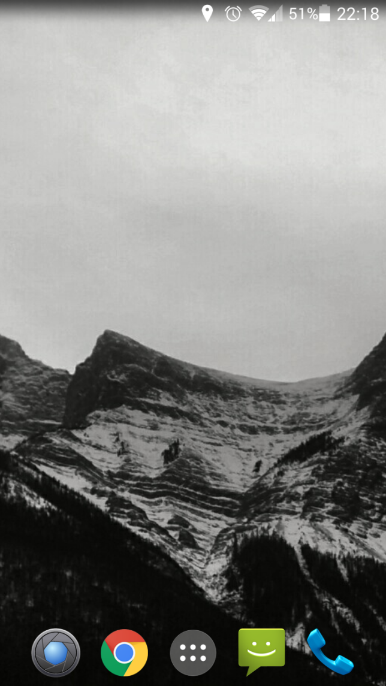

Smartphone addiction
A couple of days ago, it hit me that I was spending way too much time on my phone. Whenever I had a spare moment, I was on Facebook rechecking the same news feed, rummaging for something that I may have missed. I was rechecking my email even though I knew that I did not miss anything.
I am an advocate of technology and smart phones, but we need to get our level of technology consumption right. We don’t need to be connected to the internet all the time. And we really don’t need to be instantly notified that someone has liked my Facebook profile photo while we are dining with friends. Or that Jetstar is having a “hot sale” for airplane tickets to Cairns from a years time when we are on the way to work.
What causes us to be addicted to our smartphones? Personally, I think it can be drilled down to what can be defined as “infinity” apps as described in this article. These are apps that gives us delightful (and deceiving) notifications and once its opened sucks us into a vortex of infinite (yet extremely useless) information.
That’s why I decided to remove all(*) of the distracting apps on my phone. I even considered switching to a dumb-phone – but I realised that I’m not that hardcore about this issue. And plus, I really do need some of the apps to make my life so much easier.
I plan to use my phone for the following:
- Phone – need
- Messages – need
- Maps – need
- Tripview (Sydney’s real time public transport information) – need
- Camera – need
- Browser (for occasional browsing) – need
- Spotify – sort of need
- Weather – need
- Todoist – will actually make me productive
- Evernote – sometimes really convenient and will actually make me productive
- Google Drive - sometimes really convenient and will actually make me productive
- Centrelink – much more convenient than logging in online
- Kakaotalk (temporarily) – will need to get rid of
- Whatsapp (temporarily) – will need to get rid of
Things I will not use it for
- Mails – university and personal
- Facebook – I really don’t need to have access instantly.
- Facebook Messenger – If something is really urgent, they can call me
- Bank – I can access it on my browser
- Games
- Other useless apps